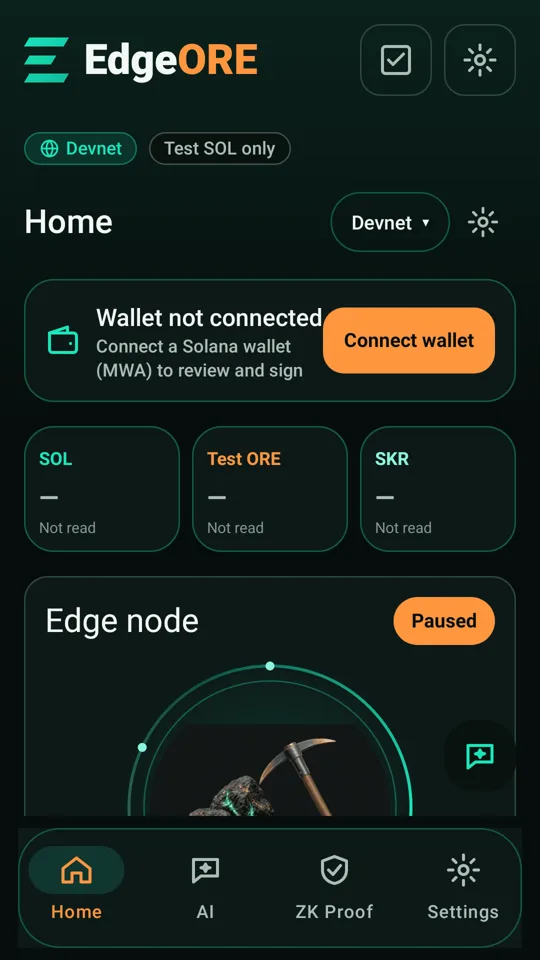
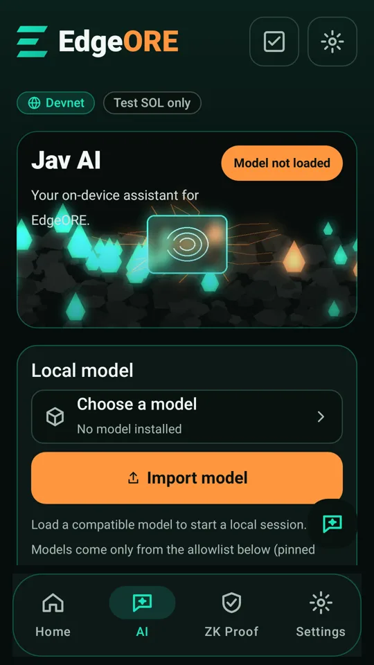
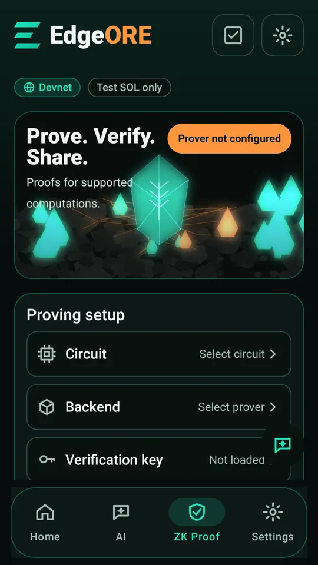
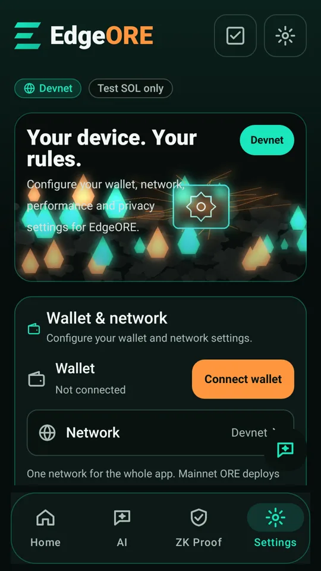

Observe the round
See the live board and per-square totals in the app. Unread SOL, ORE and SKR balances stay “Not read”.
Native Android · Solana Mobile
Read the board. Pick your squares. Review every deploy. EdgeORE puts ORE v3 on your phone, with your wallet in control.
Review candidate · Version 0.1.0-clockin · Android 8+
*Rent and network fees are extra. Deployed SOL may be lost entirely.

The core of EdgeORE
ORE mining is EdgeORE’s focus. The app reads the live program’s Board and Round accounts, then builds a deploy for the squares you choose.
Open the Android app for observed round, slot and per-square SOL. This website does not connect to RPC or a wallet.
See the live board and per-square totals in the app. Unread SOL, ORE and SKR balances stay “Not read”.
Mainnet requires explicit risk acknowledgement. A deploy is capped at 0.01 SOL across your selected squares, for one round.
Review exact bytes, sign in your MWA wallet, then submit separately. There is no automatic deploy or resend.
One coherent workspace
Home, AI, ZK Proof and Settings share the mint interface. Optional capabilities tell you when they need setup.



All four images are repository JVM renders of the fresh-install UI, not device captures. No model is bundled; ZK proofs are not generated without a configured prover.
From intent to observation
Program, round, squares, amount, fee and message digest.
Your wallet signs. Returned bytes must match the review.
A separate action, recorded before the send attempt.
Unknown outcomes stay unknown until checked. Never auto-resent.
Local receipts are signed with the install’s Android Keystore key where available. The separate JVM checker verifies signed contents. A receipt alone does not prove on-chain confirmation, useful work or payment.
Explore receipt verification ↗Straight answers
What’s implemented, what needs configuration, and what still needs evidence.
EdgeORE is a native Android ORE v3 client for Solana Mobile. It reads the live 5×5 board and builds capped deploy transactions, reviewed and signed through Mobile Wallet Adapter. Package: com.edgeore.app.
No. EdgeORE interacts with ORE v3 on Solana. It does not run CPU proof-of-work mining, estimate income or promise rewards. Checkpoint and reward claim are not implemented.
No. The cap covers deployed SOL across selected squares in one round. Miner-account rent and network fees are extra. Deployed SOL may be lost entirely.
No. This website is a product showcase. Wallet authorization, signing, RPC reads and deployment happen in the Android app. The website requests no wallet permissions or credentials.
The repository records source-side tests and local-fork ORE deploy simulation. UI images are JVM renders. Real-device mainnet wallet signing and transaction landing remain unverified in the referenced integration record.
Inspect the recorded verificationCheck the repository’s releases for publicly available artifacts and their matching checksums, source stamp and signing certificate. Draft assets are not public downloads. Never treat a differently stamped APK as the current build.
Check APK availabilityNo. EdgeORE is built by CodesbyFebin and is not affiliated with or endorsed by Regolith Labs. Third-party dependencies retain their own licenses and attribution.
Explore the project
Inspect the implementation, read the test boundaries and choose the exact Android artifact you want to review.